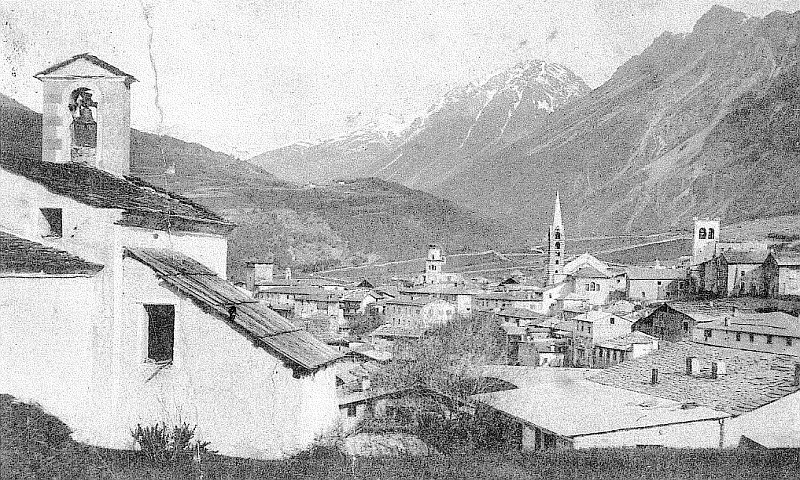
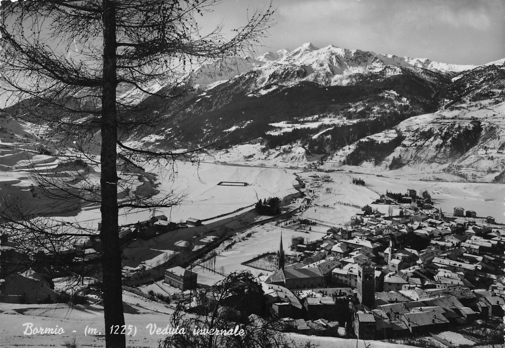

Il Contado di Bormio
Il bormiese ha una storia antica e ricca che si perde nella notte dei tempi, come dimostrano gli sporadici rinvenimenti di insediamenti preistorici, riconducibili a gruppi di cacciatori che durante i mesi estivi bivaccavano in alta montagna. Anche l’epoca romana lascia traccia di conoscenza delle valli bormine, ma soprattutto delle acque termali, già note e rinomate per il valore terapeutico, come riferito da Cassiodoro nel 535-536 d.C.
Bisogna invece attendere sino ai primi secoli dell’anno mille per ricostruire la storia di Bormio documentata dalle copiose fonti archivistiche che ancora si conservano. Grazie al commercio che si svolgeva instancabilmente per l’intero corso dell’anno lungo i passi alpini, la cittadina si arricchì di beni, di idee e cultura. Sebbene dipendente dal vescovo di Coira, Bormio riuscì ben presto ad acquisire autonomia politica, insediando un governo autonomo e democratico che delineò la vita del paese anche nei periodi di influenza straniera. Fu soprattutto il contatto con i duchi di Milano (1376-1509) che favorì lo sviluppo della cultura e dell’arte, come attestato dalle numerose opere ancora evidenti nelle chiese, nei palazzi e nei dipinti che si conservano copiosi. Dopo un breve insediamento francese, dal 1512 al 1797 gli elvetici delle leghe Grigie esercitarono la loro influenza sul paese, pur consentendo l’autonomia politica e il mantenimento degli statuti democratici preesistenti.
Nel corso del XVII secolo anche Bormio, come il resto dell’Europa, conobbe le difficoltà legate alle guerre di religione: saccheggi, transiti di eserciti e pestilenze lasciarono pesanti segni sul tessuto economico e sociale del paese. Nel 1797 Bormio perse definitivamente l’autonomia e la sua storia confluì con quella del nascente stato Italiano. Il primo conflitto mondiale vide Bormio coinvolto nelle ostilità belliche: con un fronte di oltre 40 chilometri ad un’altitudine media di 3000 m., soldati di entrambi gli schieramenti si confrontarono in un’eroica guerra alpina, della quale si conservano sui monti ancora tracce evidenti e preziose.
Lo sviluppo del turismo, da collocare al termine del secondo conflitto mondiale, fu favorito da un ambiente naturale ricco e sorprendente, dalla costruzione degli impianti di risalita e dallo sviluppo del termalismo, elementi tutti che fanno di Bormio una splendida stazione turistica nel cuore delle Alpi.